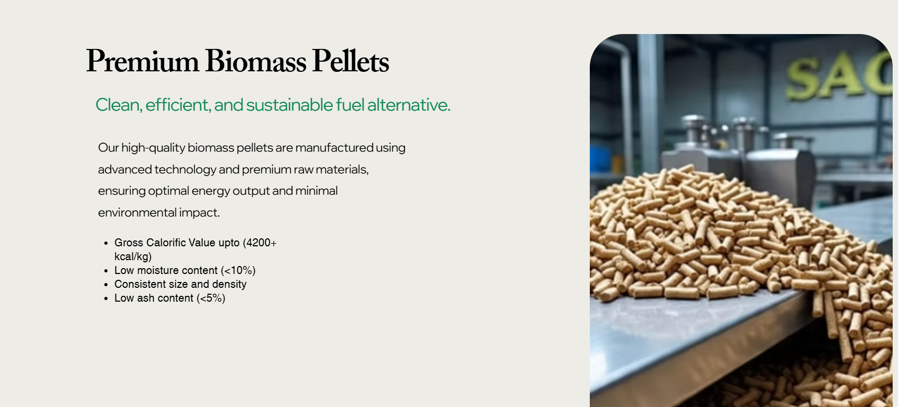
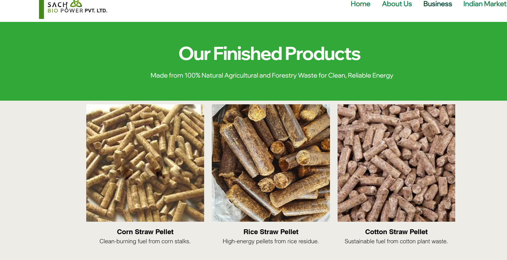
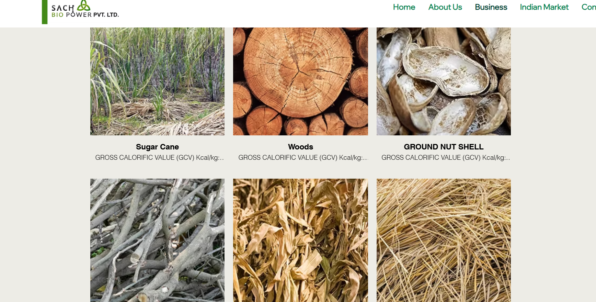
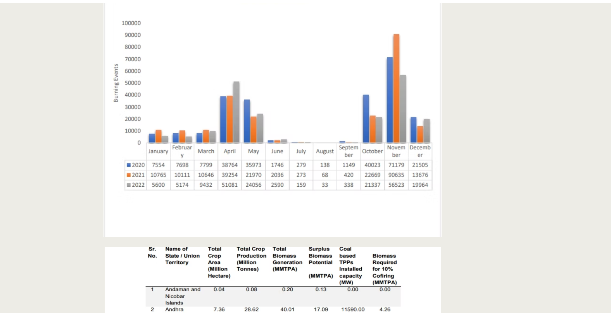

Sach Bio Power PVT.LTD.
Biomass & Pellet Manufacturing Website
About This Project
Sach Bio Power Pvt. Ltd. is a biomass manufacturing company focused on producing biomass pellets from waste materials.
The website is designed to present the company, its products, and its sustainable approach to converting waste into useful biomass fuel.
The website provides clear information about the company's products and services while creating a professional online presence.
Its clean and user-friendly layout makes it easy for visitors to explore the company and understand its biomass solutions.
Frontend Designer & Web Developer
Wix, Wix Editor, HTML, CSS
Live Project
Product Showcase, Biomass Product Categories, Company Information, Responsive Design, User-Friendly Navigation and Contact Options.
Website Screenshots
Explore different pages and sections of Sach Bio Power PVT.LTD.

Home Page


